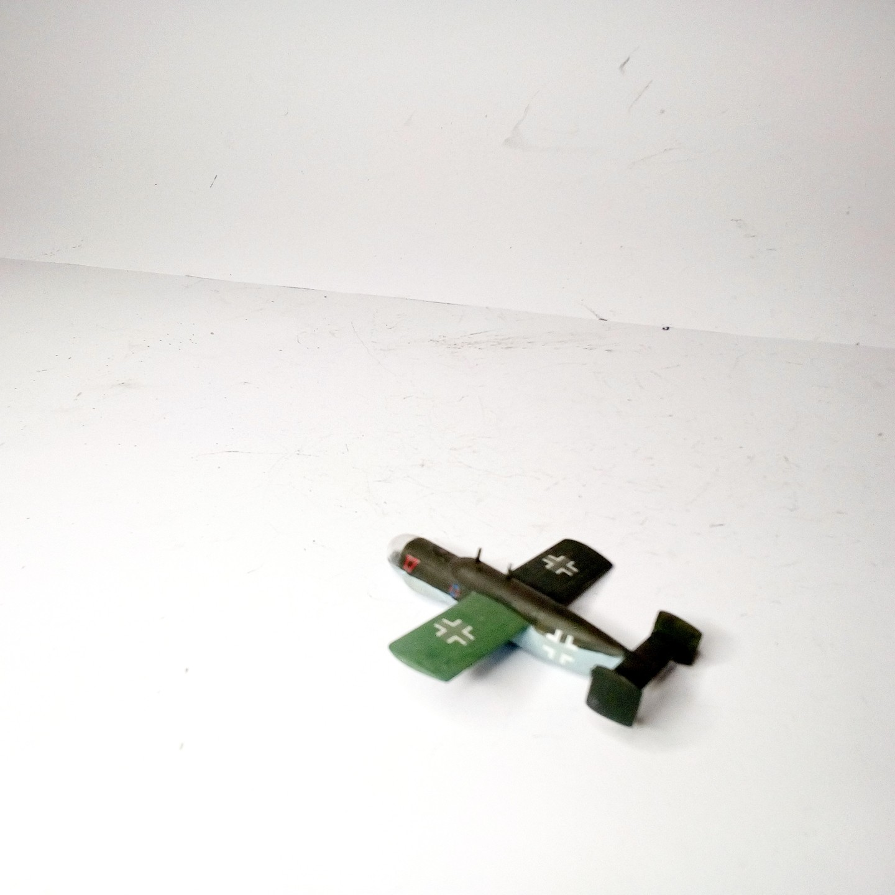
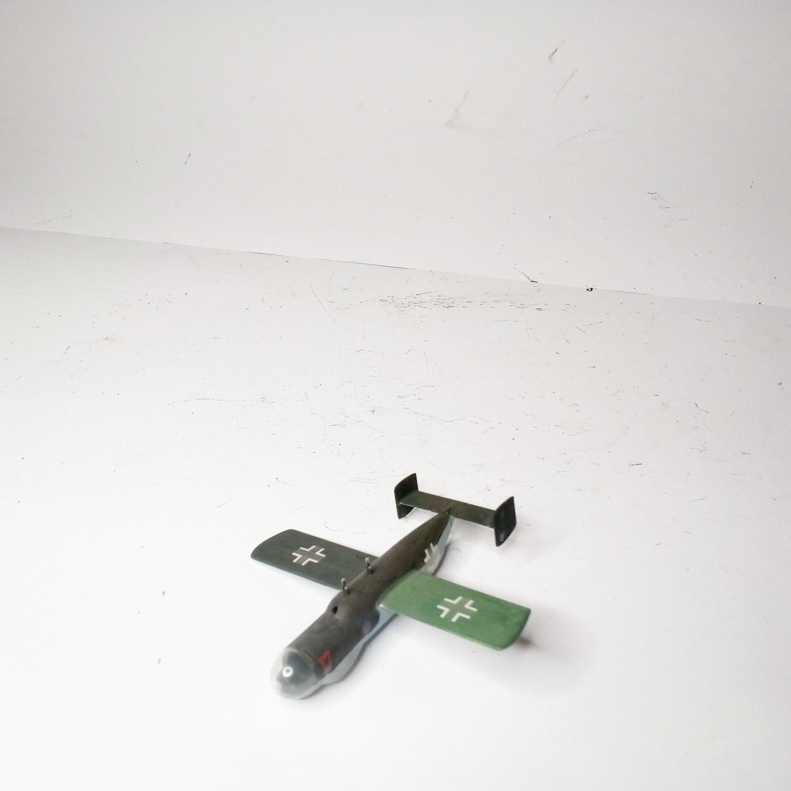
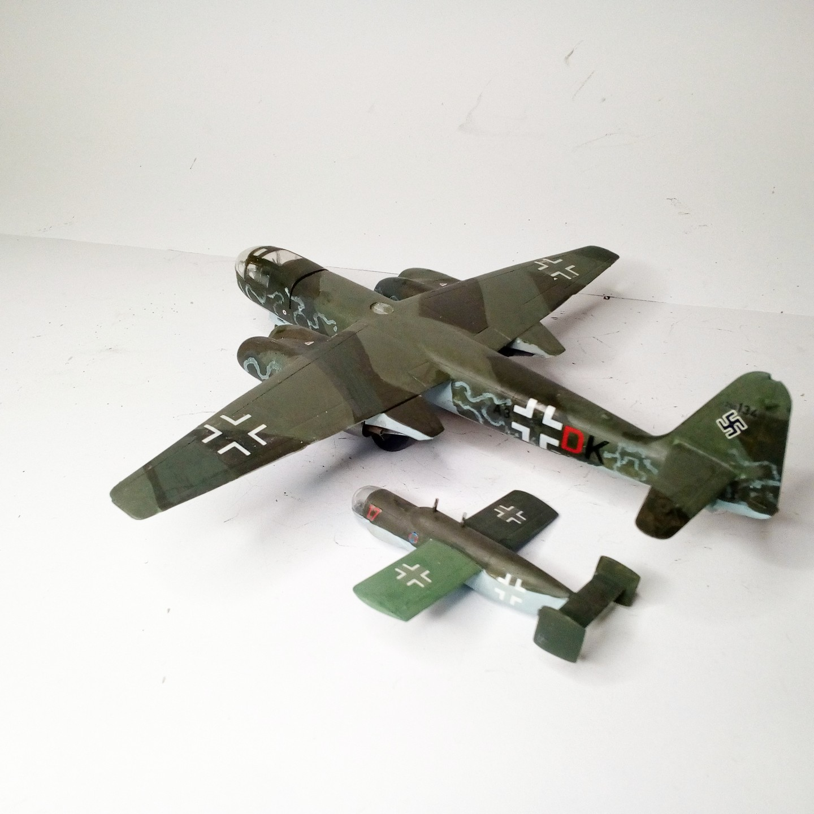

Aerei · scale model archive
Arado Ar234 C and E381 parasite fighter
Arado Ar234 C and E381 parasite fighter — Kit: Revell, Scale: 1/72. Another nice idea for a fictitious 'Luft46' subject #1/72 #Revell

Photo gallery


English description
Another nice idea for a fictitious 'Luft46' subject
#1/72 #Revell
Descrizione italiana
Un altro bello idea per una immaginario 'Luft46' soggetto.